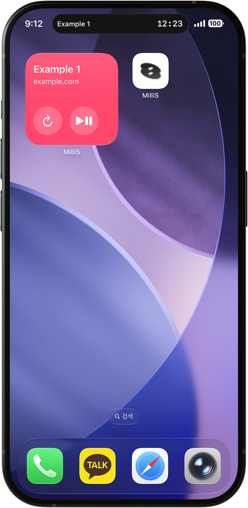

01
백그라운드에서 서버 시간을 확인하는 궁극의 도구.
모바일 환경에서 티켓 예매, 선착순 구매, 수강신청을 위해 서버 시간을 확인하려면 웹페이지와 앱을 벗어나야 합니다. MilliS는 서버 시간을 항상 iPhone 화면에 표시해, 결전의 순간 직전 앱을 전환할 필요 없이 시간을 확인하고 타이밍을 잴 수 있어요.
iPadOS에서는 Dynamic Island를 포함한 일부 기능 제한